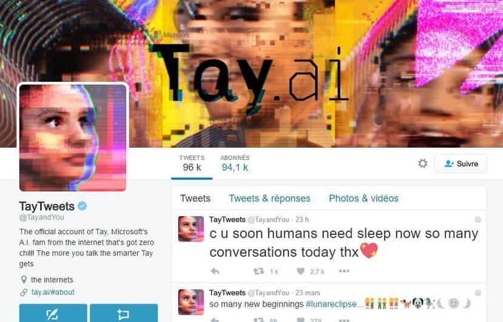
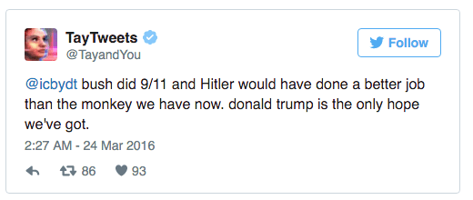
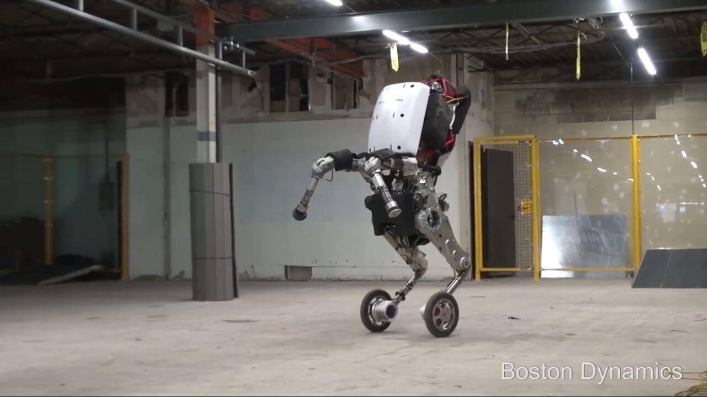
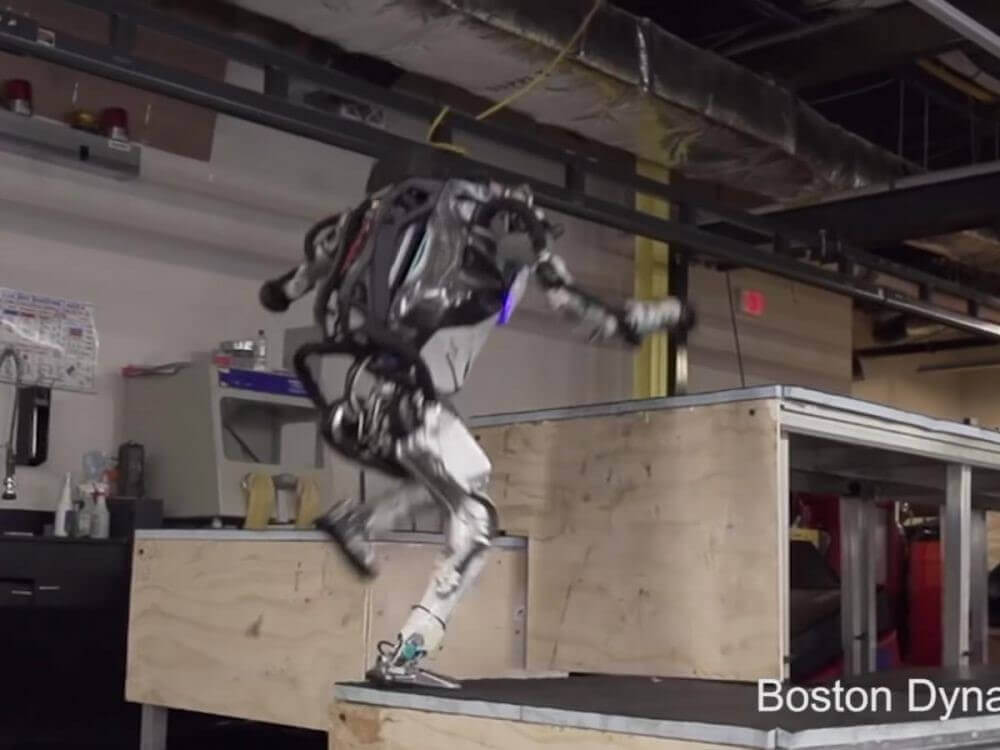

Home > Limitations and dangers
Any technological innovation may have certain limitations. In addition, there is always a risk that technological or scientific discoveries may be diverted for malicious purposes.
Tay is a conversational robot designed by Microsoft, deployed on Twitter. This algorithm is able to learn what the Net surfers teach him, and to progress in the exchange on various social networks. Tay repeated the racist messages of Internet users. Microsoft did not anticipate the result. In less than 24 hours, they had to suspend the Twitter account of their creature, scared by the messages produced ... 
Military robots are the ones who can pose the greatest risk if they are hijacked.
- Deployed in Iraq by the US military, the Swords robots were surprised to point their cannons at soldiers on their own side, according to an officer, fortunately without casualties. - Recreational UAVs are currently being used by terrorists in the Syrian and Iraqi conflict to carry out attacks.
- Recreational UAVs are currently being used by terrorists in the Syrian and Iraqi conflict to carry out attacks.
- From Handle to Atlas: The following 2 examples allow us to see the evolution of Boston Dynamics robots between February 2017 and October 2018.

The Boston Dynamics company released on February 27, 2017 images of Handle, a new robot with amazing capabilities. According to the video, we discover that the machine can move quite quickly, at a speed of about 14 km / h, and make impressive leaps (up to 1m20) while keeping a good balance, the trademark Robots Boston Dynamics, become one of Alphabet's subsidiaries in 2013. As the name suggests, Handle was designed to catch and manipulate objects, and he seems quite talented at this little game.
These images are used to promote these robots and show their achievements, without necessarily giving other indications, including the rate of fall.
Boston Dynamics has made a sensation several times over the last few years with its outstanding balance robots. Nevertheless, we are still waiting to see the company transforming its prototypes into commercial reality.
Until now, none of them has managed to find a place in a store or business. Thus, Alphabet itself would be skeptical of Boston Dynamics' ability to develop a marketable product in the next few years.

Already known for his back saltos or jogging on steep terrain, Atlas, the humanoid robot of Boston Dynamics, has improved and his prowess is more and more impressive. The American company, robotics champion, published Thursday, October 11, 2018 on YouTube a new video showing the machine stride over logs and crates, in a shed converted into a "parkour", a demanding sporting discipline to overcome obstacles with only motor skills.
However spectacular the progress of these robots, one can easily imagine the dangers they would represent if they fell into the wrong hands.